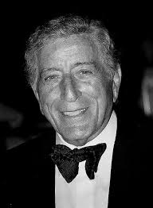

- Chrisette Michele
- Bill Withers
- Tony Bennett
Tony Bennett

소개
Tony Bennett는 미국의 전설적인 재즈 및 팝 가수이자 화가로, 수십 년간 대중음악계에서 꾸준히 활동하며 사랑받은 예술가였다. 그는 뉴욕 퀸스의 이탈리아계 가정에서 태어났으며, 어린 시절부터 음악과 예술에 관심을 보였다.
주요 경력 및 활동
• 그의 음악 경력은 1950년대 초에 시작되었다. 1951년 “Because of You” 와 “Rags to Riches” 같은 발라드 곡들이 크게 히트하며 스타덤에 올랐다.
• 1962년 발표된 “I Left My Heart in San Francisco” 는 그의 대표곡이 되었고, 이 노래로 그래미 어워드를 수상하며 세계적인 인기를 얻었다.
• 부드럽고 감미로운 목소리, 그리고 뛰어난 해석력으로 재즈, 팝, 스탠더드 곡들을 소화해내며 폭넓은 청중을 사로잡았다.
수상과 영향력
• 생애 동안 20개 이상의 그래미 어워드 를 수상하였으며, 2001년에는 그래미 평생 공로상을 받았다.
• 그는 현대 음악과도 협업하며 2014년 레이디 가가와 함께 앨범 《Cheek to Cheek》 을 발매하여 또 다른 세대와의 소통에도 성공했다.